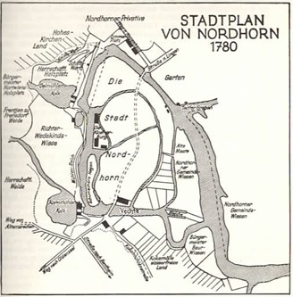

Das Stadtzentrum von Nordhorn ist der Ort, an dem die Stadt Nordhorn ihren Ursprung fand: das Gebiet zwischen den beiden Vechtearmen. Heute wird es Innenstadt oder auch Vechteinsel genannt. Doch dieses Gebiet war nicht immer nur die Vechteinsel. Tatsächlich bestand der Bereich zwischen den beiden Vechtearmen, wie wir ihn kennen, aus vielen kleinen Inseln, unterteilt durch die Binnenvechtearme. Die einzige dieser Binnenvechten, die die Zeit überdauerte, ist das Verbindungsstück zwischen der alten Kornmühle und der Ölmühle (heute das Wehr). An diese Binnenvechte grenzten einst die Burginsel und Schuhmachers Hagen, zwei der kleinen Inseln, die bereits nicht mehr bestehen. Die Burginsel, mit der auf ihr erbauten Burg, gehörte zunächst dem Grafen von Bentheim entwickelte sich dann aber zu einer Kirche. Dieses geschah durch die Einwirkung des Klosters, wodurch erst das Recht dort Gottesdienste abzuhalten gegeben war. Später wurde, nach einem Brand, eine neue Kirche gebaut. Seit 1913 ist die Augustinuskirche fertig und begehbar. Durch die Entwicklung hin zu einer Kirche wurden dann auch die Burggräben nutzlos und zugeschüttet. Somit hatte die Innenstadt eine Insel weniger. Schuhmachers Hagen, welches lange von der Schuhmachergilde zum Gerben des Leders genutzt, wurde blieb auch keine eigenständige Insel. Aus der Literatur geht hier und bei den anderen Binnenvechten nicht hervor, wann diese an die große Insel angegliedert wurden. Vermuten lässt die Literatur, dass diese Vechtearme ab 1800 zugeschüttet wurden als Nordhorn anfing zu expandieren und Probleme hatte, weitere Bauplätze innerhalb der Stadtgrenzen zu finden. Der einzige Teil der Vechteinsel, der von damals bis heute größtenteils gleich geblieben ist, ist der Verlauf der Hauptstraße mittig über die Vechteinseln. Zwar wurden häufiger Anträge gestellt, die Hauptstraße mit Vorgärten oder weiteren Grundstücken zu verschmälern, diese wurden jedoch recht schnell wieder abgelehnt. Des Weiteren blieb auch die Ochsenstraße unverändert. Mit dem Beginn der Textilindustrie in der Umgebung im Jahre 1839 expandierte auch Nordhorn. Die ersten zu Nordhorn gehörenden Wohngebäude außerhalb der Stadtgrenzen entstanden. Zudem schlossen die Stadt Nordhorn und umliegende Gemeinden Abkommen über Weideflächen. Während die Textilindustrie, die größtenteils im Süd-Westen der Innenstadt Nordhorns in Frensdorf ansässig war, weiter vergrößerte, stieg auch die Bevölkerung im Gebiet um Nordhorn, auf 2700 Einwohner. Nach dem ersten Weltkrieg erlebte die Nordhorner Textilindustrie einen weiteren Schub, da das Elsass mit der dortigen fortschrittigen Textilindustrie Frankreich zugesprochen wurde. Infolgedessen wurde Frensdorf eingemeindet und gehört ab 1919 (Heinrich Specht) oder 1921 (Wikipedia) zu Nordhorn. Dieses bot Nordhorn die Möglichkeit weiter Baugrund zu erschließen, so wurde die Steinmaate als Baugrund freigegeben. Viele Wohngebäude entstanden zudem an den aus Nordhorn führenden Straßen, der Neuenhauser Straße, der Lingener Straße, der Bentheimer Straße und der Denekamper Straße. Auch am Gildehauser Weg entstanden neue Wohnblöcke in der Nähe des Blankebeckens in der Frensdorfer Mark. Es entstand das Bild des sich sternförmig ausbreitenden Nordhorns. 1924 baute die Nike eine Hochspannungsleitung von Ibbenbüren nach Nordhorn, sodass im Dezember 1924 das erste Mal elektrisches Licht in den Straßen Nordhorns brennte. Des Weiteren wurde im Jahr 1925 die erste Höhere Schule Nordhorns gebaut, das jetzige Gymnasium Nordhorn. Im Jahr darauf entstand auch ein Kreiskrankenhaus in Nordhorn.

Zurück zur Hauptseite